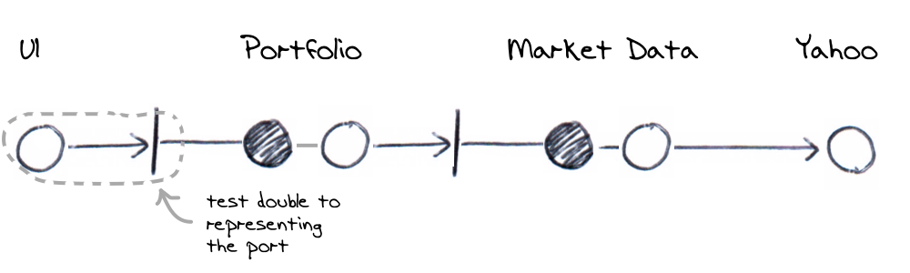

When a user requests the current portfolio value in the UI, the Portfolio is queried for it's
current value and it is displayed in the UI appropriately. It's specifically testing the web UI, however, we
would like to test the UI without testing the backend.

The UI has an adapter to the Portfolio component. In production, the specific implementation of
it's adapter would use a HTTP GET to call the server. It's implemented in terms of a
JQuery ajax call. In testing however, we'd prefer to use
a test double for the adapter and therefore, just test the UI accesses the port correctly.
GET callIn this test, we fake out the server (application) component so that the UI uses JQuery to make a a real HTTP request that we can intercept and make assertions against. An alternative however would be to front the JQuery call behind our own JavaScript interface (port) and substitute this for testing. That way, we can exercise the port without making a real HTTP call.
Part of the UI's responsibility is to is to format the response correctly and do any rounding. It's implemented using JavaScript on the client and is tested as part of this test.
When I ask for a portfolio value in the UI, it's displayed as intended.
A portfolio value of 10500.988 [details]
The response from the server contains the header
Access-Control-Allow-Origin
with a value of
*
and a body of
10500.988
A user refreshes the portfolio page
The portfolio value is requested and displayed on the UI as 10,500.99